Το αρχείο που παράγει τους χάρτες σε μορφή html είναι το q1.py
Αρχικά, διαβάζει το αρχείο train_set.csv και παίρνει ενα – ενα τα entries έτσι ώστε να μην επιλέξει μια διαδρομή 2 φορές (με τη χρήση ενός set). Εν τέλει επιλέγει, έτσι, 5 διαφορετικές διαδρομές και τις κάνει plot. Τα html αρχεία είναι αποθηκευμένα στον φάκελο q1plots. Παρακάτω παρουσιάζονται τα αποτελέσματα του προγράμματος:
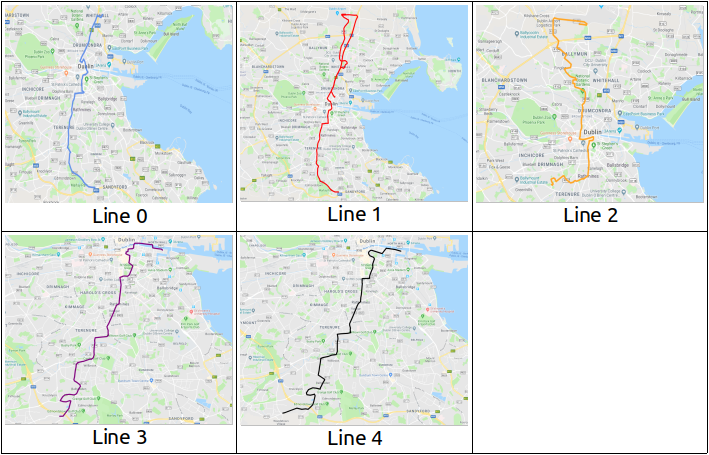
Ο αλγόριθμος DTW δεν υλοποιήθηκε από εμάς. Κατεβάσαμε την υλοποίση μέσω αυτου του συνδέσμου
Το αρχείο κώδικα που φτιάχτηκε για αυτό το ερώτημα είναι το a1.py, το οποίο διαβάζει τα 2 sets και κάνει τη δουλειά που του ζητείται.
Όλα τα αρχεία του ερωτήματος βρίσκονται στον φάκελο a1/. Οι εικόνες και τα meta data του κάθε γείτονα κλπ βρίσκονται όλα ταξινομημένα στον φάκελο a1plots/. Για παραπάνω πληροφορίες, βλ. κώδικα.
Τα αποτελέσματα του προγράμματος παρουσιάζονται παρακάτω :
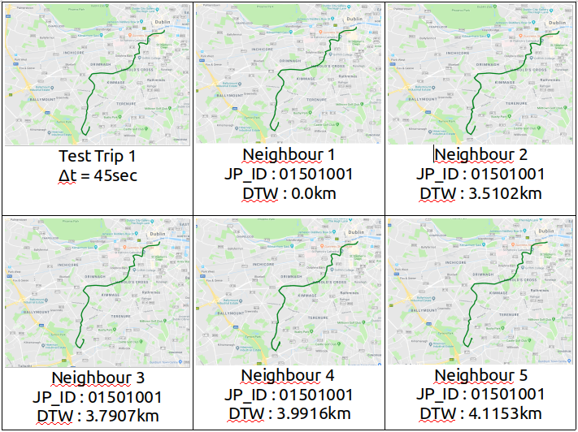
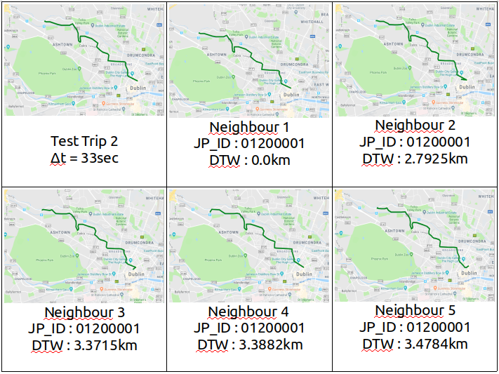
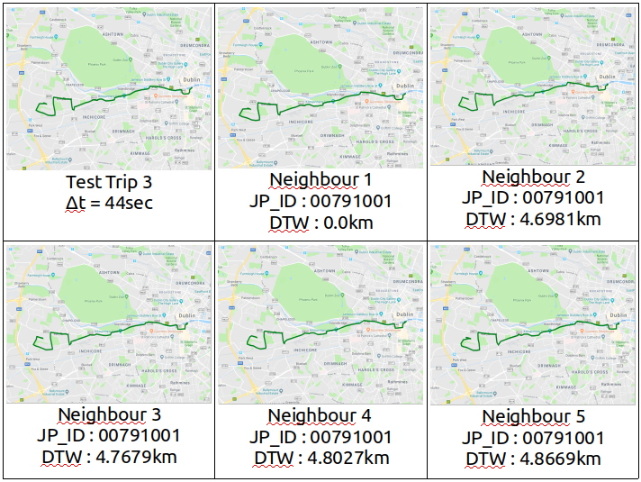
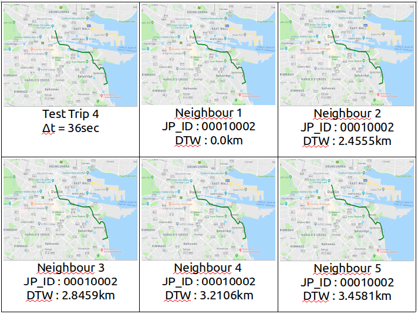
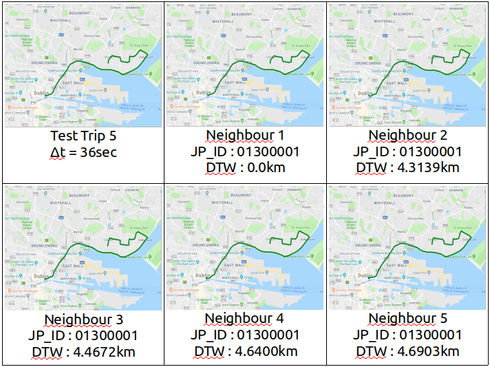
Για κάθε ενα entry του αρχείου test_set_a2.csv, το πρόγραμμα a2.py ψάχνει τους 5 γείτονες με μέγιστη κοινή υπακολουθία σημείων διαδρομής μέσω brute force. Η εύρεση της μέγιστης κοινής υπακολουθίας 2 trajectories γίνεται με επαναληπτική δημιουργία του πίνακα του αλγορίθμου στον οποίο κάνουμε backtrack για να χτιστεί η μέγιστη κοινή υπακολουθία.
Ο αλγόριθμος γράφτηκε απο εμάς βάσει θεωρίας και ψευδοκώδικα της Wikipedia.
Όλα τα αρχεία του ερωτήματος αυτού βρίσκονται στον φάκελο a2/. Οι εικόνες και τα metadata (αποτελέσματα του προγράμματος) βρίσκονται στον φάκελο a2/a2Plots/
Τα αποτελέσματα του προγράμματος παρουσιάζονται παρακάτω:
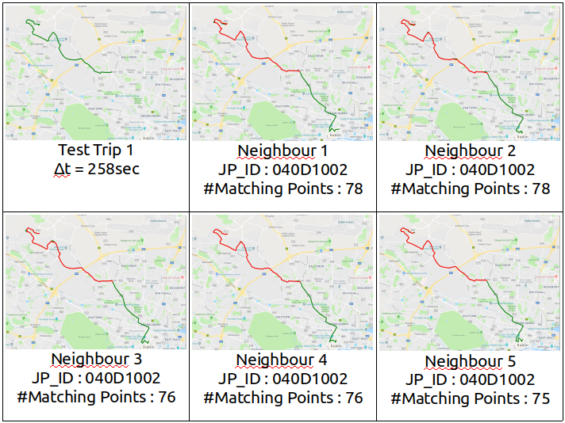
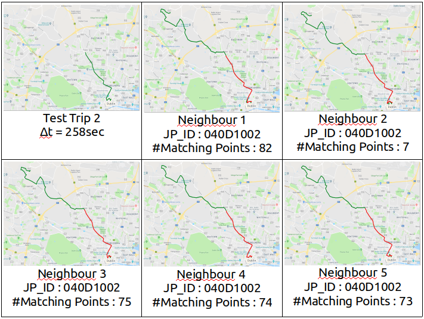
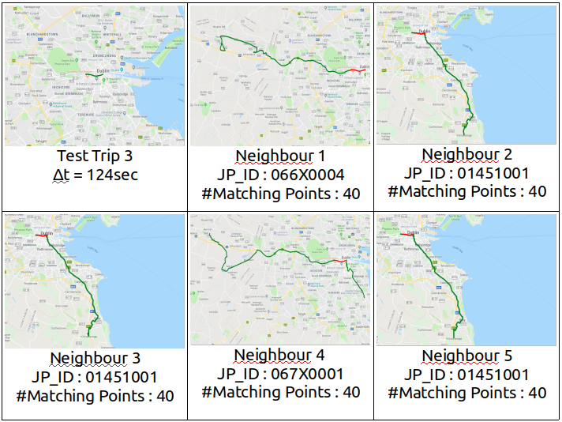
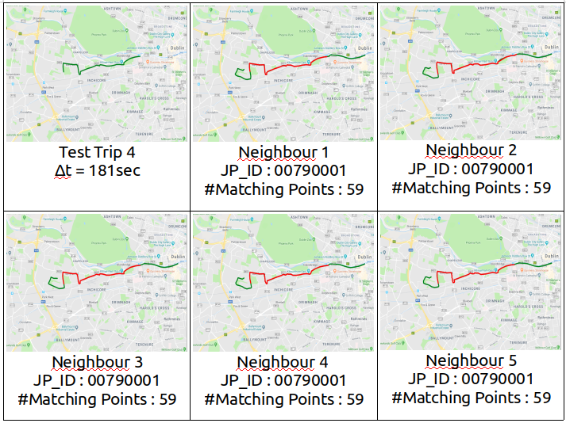
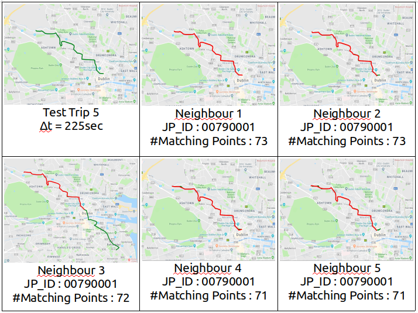
Το ερώτημα 3 υλοποιείται από τα αρχεία:
Το knearestbrute.py είναι η δικιά μας υλοποίηση knearestneighbour classifier, η οποία χρησιμοποιεί dtw me harvesine για να υπολογίσει αποστάσεις μεταξύ trajectories. Η αναζήτηση γίνεται εξαντλητικά. Η υλοποίηση είναι περίπου ίδια με την υλοποίηση που είχαμε φτιάξει στην προηγούμενη εργασία, ελαφρώς διαφορετική, ώστε να δουλεύει με τα δεδομένα που δίνονται.
To knntest.py υλοποιεί 10-fold cross validation για το 1/10 του train_set χρησιμοποιώντας τον classifier knearestbrute. Το 10-fold cross-validation υλοποιήθηκε από εμάς.
Τα αποτελέσματα είναι τα παρακάτω:
To q3.py υλοποιεί το ζητούμενο του ερωτήματος 3. Διαβάσει τα train_set, test_set_a2 κάνει fit από το train_set και κάνει predict το test_set. Γράφει τα αποτελέσματα στο testSet_JourneyPatternIDs.csv